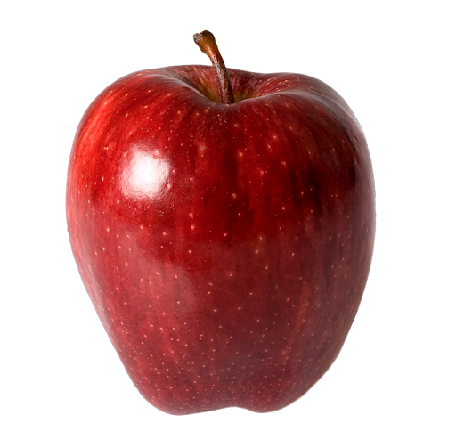
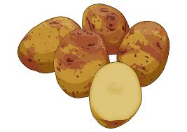
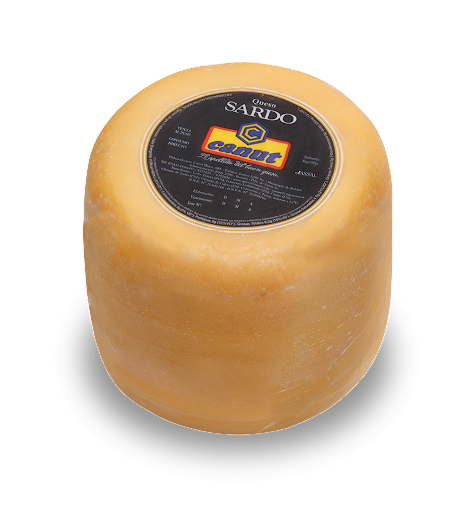
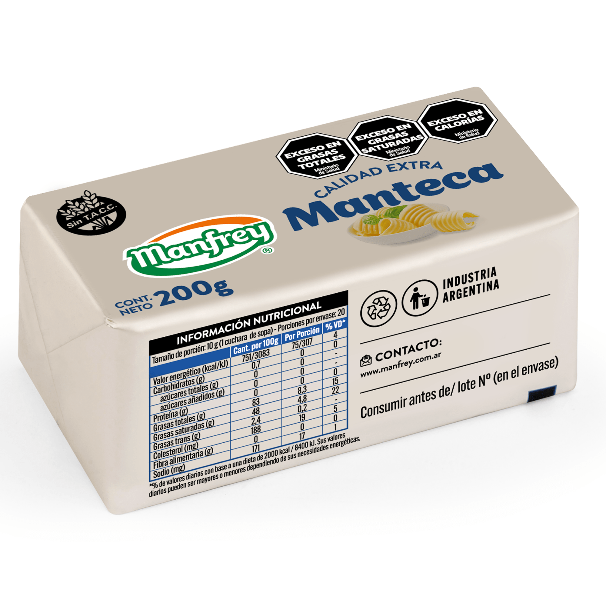

¿Cuál es la etiqueta principal utilizada para crear una tabla en HTML?
La etiqueta principal que se usa para crear una tabla es la etiqueta "table" la cual nos define el inicio y el final una tabla en html
¿Qué etiqueta se utiliza para definir una fila en una tabla?
La etiqueta que usa es "tr" dentro de esta se coloca las celdas en fila
¿Cuál es la etiqueta utilizada para crear una celda de encabezado en una tabla?
La etiqueta utilizada es "th" la cual nos permite esta funcion
¿Cuál es la etiqueta utilizada para crear una celda de datos en una tabla?
La etiqueta utilizada es "td"
¿Qué atributo se utiliza para especificar cuántas columnas debe abarcar una celda?
El atributo que se utiliza es "colspan"
¿Qué atributo se utiliza para especificar cuántas filas debe abarcar una celda?
El atributo que se utiliza es "rowspan"
Si necesitamos crear una tabla con 10 filas ¿qué etiqueta y cuántas veces se debe utilizar para definir las filas?
Se debe utilizar "tr" los cuales se deben definir 10 veces para completar la tabla de la pregunta
| nombre | calorias | tipo | imagen |
|---|---|---|---|
| Manzana | 52 | frutas |  |
| Naranja | 47 | Frutas | |
| Papa | 86 | Verduras |  |
| Queso | 402 | Lacteos |  |
| Cebolla | 40 | Verdura |  |
| Pos. | Numero | Piloto | Marca | Vueltas | Tiempo | Diferencia |
|---|---|---|---|---|---|---|
| 1º | 231 | Urcera, José Manuel | 25 | 39:28.539 | ||
| 2º | 121 | Craparo, Elio | 25 | 39:29.740 | 1201 | |
| 3º | 4 | Castellano, Jonatan | 25 | 39:31.206 | 2.667 | |
| 4º | 96 | Benvenuti, Juan Cruz | 25 | 39:33.118 | 4.579 | |
| 5º | 10 | Aguirre, Valentín | 25 | 39:33.764 | 5.225 | |
| 6º | 19 | Ciantini, Diego | 25 | 39:37.838 | 9.299 |